Hello and welcome back to our initial exploration into Random Forests! Today I'm going to spice a little bit of unsupervised learning into our analysis. I'm also going to try a few interpretation techniques that can not only be useful for getting to know your data better but also for explaining why your model gives the results it does.
Removing Redundant features with unsupervised learning
One thing that makes this harder to interpret is if there are some variables with very similar meanings. Let's try to remove redundent features using some unsupervised learning; specifically we'll be using some hierarchical (or agglomerated) clustering. We'll do this by taking advantage of Spearman's rank correlation coefficient. Spearman's correlation is the same thing as converting two variables to rank values and then running a standard Pearson's correlation on those ranked variables. When I say 'rank values' I simply mean ordering each independent (and associated dependent) variable in increasing order. Their place in this list is their 'rank'. Then a Pearson's correlation measures the linear corelation between these newly ranked independent and dependent variables. One can think of this as checking to see which ranked features have a increase correlated with an increase in the ranked response (SalePrice) and grouping those that are correlated in a similar fashion. Let's see how we do this analysis in python:
from scipy.cluster import hierarchy as hc
corr = np.round(scipy.stats.spearmanr(df_keep).correlation, 4)
corr_condensed = hc.distance.squareform(1-corr)
z = hc.linkage(corr_condensed, method='average')
fig = plt.figure(figsize=(16,10))
dendrogram = hc.dendrogram(z, labels=df_keep.columns, orientation='left', leaf_font_size=16)
plt.show()
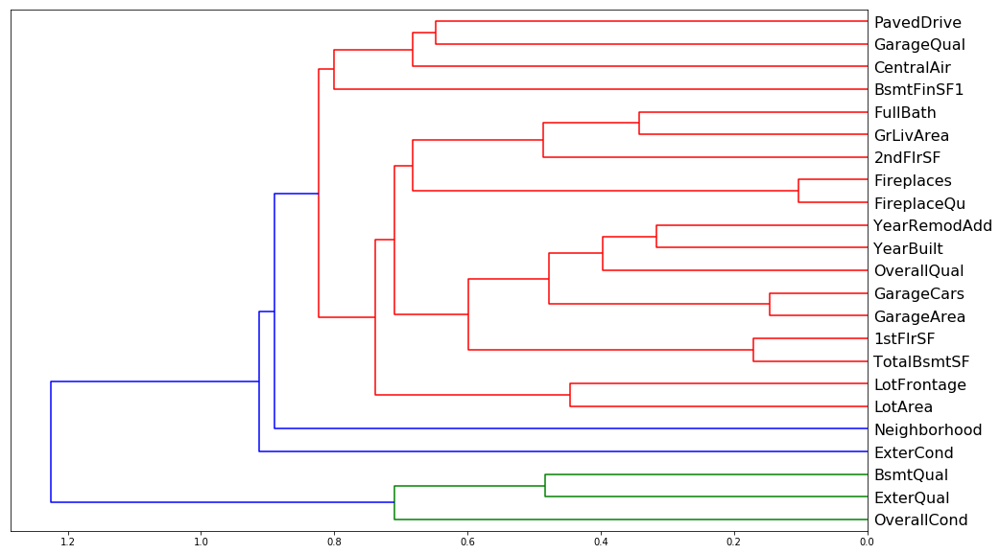
corr = np.round(scipy.stats.spearmanr(df_keep2).correlation, 4)
corr_condensed = hc.distance.squareform(1-corr)
z = hc.linkage(corr_condensed, method='average')
fig = plt.figure(figsize=(16,10))
dendrogram = hc.dendrogram(z, labels=df_keep2.columns, orientation='left', leaf_font_size=16)
plt.show()
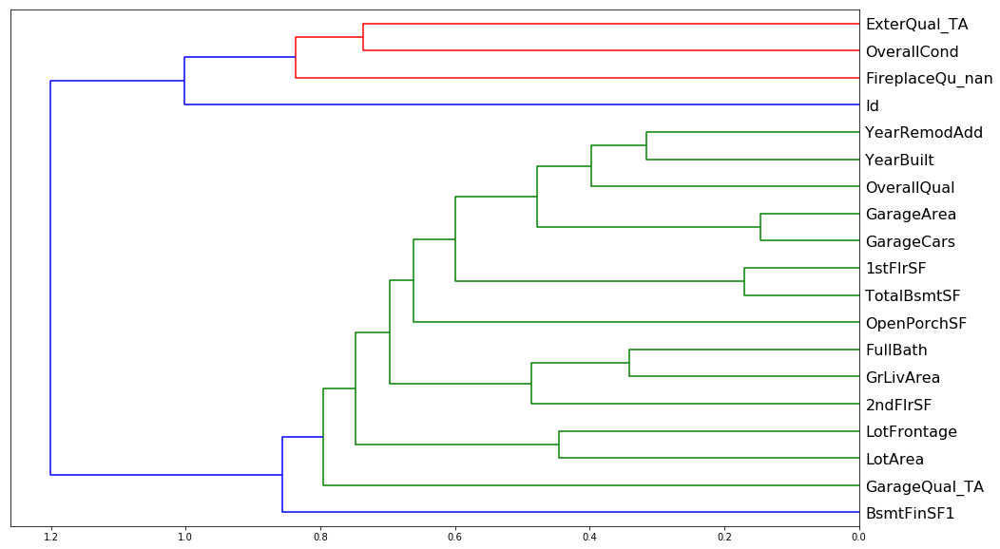
Doesn't look like there's much redundancy in the features of either one, though one worrisome aspect of both is the big blue split that occurs in both. There seems to be two major groupings in both sets of data which leads me to believe that some of these features are inextricably linked. Intuitively this would make sense, e.g. GarageArea and GarageCars must explain the same sort of aspect of the data, namely how big the garage is.
display_all(df_keep.describe(include='all').T)
| count | mean | std | min | 25% | 50% | 75% | max | |
|---|---|---|---|---|---|---|---|---|
| OverallQual | 1460.0 | 6.099315 | 1.382997 | 1.0 | 5.00 | 6.0 | 7.00 | 10.0 |
| GrLivArea | 1460.0 | 1515.463699 | 525.480383 | 334.0 | 1129.50 | 1464.0 | 1776.75 | 5642.0 |
| YearBuilt | 1460.0 | 1971.267808 | 30.202904 | 1872.0 | 1954.00 | 1973.0 | 2000.00 | 2010.0 |
| GarageArea | 1460.0 | 472.980137 | 213.804841 | 0.0 | 334.50 | 480.0 | 576.00 | 1418.0 |
| TotalBsmtSF | 1460.0 | 1057.429452 | 438.705324 | 0.0 | 795.75 | 991.5 | 1298.25 | 6110.0 |
| GarageCars | 1460.0 | 1.767123 | 0.747315 | 0.0 | 1.00 | 2.0 | 2.00 | 4.0 |
| 1stFlrSF | 1460.0 | 1162.626712 | 386.587738 | 334.0 | 882.00 | 1087.0 | 1391.25 | 4692.0 |
| ExterQual | 1460.0 | 3.539726 | 0.693995 | 1.0 | 3.00 | 4.0 | 4.00 | 4.0 |
| YearRemodAdd | 1460.0 | 1984.865753 | 20.645407 | 1950.0 | 1967.00 | 1994.0 | 2004.00 | 2010.0 |
| FullBath | 1460.0 | 1.565068 | 0.550916 | 0.0 | 1.00 | 2.0 | 2.00 | 3.0 |
| LotArea | 1460.0 | 10516.828082 | 9981.264932 | 1300.0 | 7553.50 | 9478.5 | 11601.50 | 215245.0 |
| GarageQual | 1460.0 | 4.594521 | 1.262078 | 0.0 | 5.00 | 5.0 | 5.00 | 5.0 |
| 2ndFlrSF | 1460.0 | 346.992466 | 436.528436 | 0.0 | 0.00 | 0.0 | 728.00 | 2065.0 |
| BsmtFinSF1 | 1460.0 | 443.639726 | 456.098091 | 0.0 | 0.00 | 383.5 | 712.25 | 5644.0 |
| BsmtQual | 1460.0 | 3.178767 | 0.998402 | 0.0 | 3.00 | 3.0 | 4.00 | 4.0 |
| FireplaceQu | 1460.0 | 1.969178 | 2.037956 | 0.0 | 0.00 | 2.0 | 3.00 | 5.0 |
| OverallCond | 1460.0 | 5.575342 | 1.112799 | 1.0 | 5.00 | 5.0 | 6.00 | 9.0 |
| Fireplaces | 1460.0 | 0.613014 | 0.644666 | 0.0 | 0.00 | 1.0 | 1.00 | 3.0 |
| LotFrontage | 1460.0 | 69.863699 | 22.027677 | 21.0 | 60.00 | 69.0 | 79.00 | 313.0 |
| CentralAir | 1460.0 | 1.934932 | 0.246731 | 1.0 | 2.00 | 2.0 | 2.00 | 2.0 |
| PavedDrive | 1460.0 | 2.856164 | 0.496592 | 1.0 | 3.00 | 3.0 | 3.00 | 3.0 |
| ExterCond | 1460.0 | 4.733562 | 0.731807 | 1.0 | 5.00 | 5.0 | 5.00 | 5.0 |
| Neighborhood | 1460.0 | 13.251370 | 6.013735 | 1.0 | 8.00 | 13.0 | 18.00 | 25.0 |
display_all(df_keep2.describe(include='all').T)
| count | mean | std | min | 25% | 50% | 75% | max | |
|---|---|---|---|---|---|---|---|---|
| OverallQual | 1460.0 | 6.099315 | 1.382997 | 1.0 | 5.00 | 6.0 | 7.00 | 10.0 |
| GrLivArea | 1460.0 | 1515.463699 | 525.480383 | 334.0 | 1129.50 | 1464.0 | 1776.75 | 5642.0 |
| YearBuilt | 1460.0 | 1971.267808 | 30.202904 | 1872.0 | 1954.00 | 1973.0 | 2000.00 | 2010.0 |
| TotalBsmtSF | 1460.0 | 1057.429452 | 438.705324 | 0.0 | 795.75 | 991.5 | 1298.25 | 6110.0 |
| GarageArea | 1460.0 | 472.980137 | 213.804841 | 0.0 | 334.50 | 480.0 | 576.00 | 1418.0 |
| ExterQual_TA | 1460.0 | 0.620548 | 0.485417 | 0.0 | 0.00 | 1.0 | 1.00 | 1.0 |
| 1stFlrSF | 1460.0 | 1162.626712 | 386.587738 | 334.0 | 882.00 | 1087.0 | 1391.25 | 4692.0 |
| GarageCars | 1460.0 | 1.767123 | 0.747315 | 0.0 | 1.00 | 2.0 | 2.00 | 4.0 |
| LotArea | 1460.0 | 10516.828082 | 9981.264932 | 1300.0 | 7553.50 | 9478.5 | 11601.50 | 215245.0 |
| BsmtFinSF1 | 1460.0 | 443.639726 | 456.098091 | 0.0 | 0.00 | 383.5 | 712.25 | 5644.0 |
| GarageYrBlt | 1460.0 | 1978.589041 | 23.997022 | 1900.0 | 1962.00 | 1980.0 | 2001.00 | 2010.0 |
| YearRemodAdd | 1460.0 | 1984.865753 | 20.645407 | 1950.0 | 1967.00 | 1994.0 | 2004.00 | 2010.0 |
| 2ndFlrSF | 1460.0 | 346.992466 | 436.528436 | 0.0 | 0.00 | 0.0 | 728.00 | 2065.0 |
| GarageQual_TA | 1460.0 | 0.897945 | 0.302824 | 0.0 | 1.00 | 1.0 | 1.00 | 1.0 |
| OverallCond | 1460.0 | 5.575342 | 1.112799 | 1.0 | 5.00 | 5.0 | 6.00 | 9.0 |
| LotFrontage | 1460.0 | 69.863699 | 22.027677 | 21.0 | 60.00 | 69.0 | 79.00 | 313.0 |
| Fireplaces | 1460.0 | 0.613014 | 0.644666 | 0.0 | 0.00 | 1.0 | 1.00 | 3.0 |
| Neighborhood | 1460.0 | 13.251370 | 6.013735 | 1.0 | 8.00 | 13.0 | 18.00 | 25.0 |
| ExterCond_Fa | 1460.0 | 0.019178 | 0.137198 | 0.0 | 0.00 | 0.0 | 0.00 | 1.0 |
| BsmtUnfSF | 1460.0 | 567.240411 | 441.866955 | 0.0 | 223.00 | 477.5 | 808.00 | 2336.0 |
| FullBath | 1460.0 | 1.565068 | 0.550916 | 0.0 | 1.00 | 2.0 | 2.00 | 3.0 |
Let's look at the partial dependence to see if we can find any interactions between the features.
Partial Dependence Plots
So now we're at the point where we want to try and really understand the data better by taking advantage of our new trained model. We are going to use something called partial dependence. What we are going to do is we are going to find the features that are important and how they relate to the dependent variable. First let's look at a few univariate relationships.
df_keep2.to_feather('tmp/house-prices-ohe-trim')
fi2[:10]
| cols | imp | |
|---|---|---|
| 0 | OverallQual | 0.368414 |
| 1 | GrLivArea | 0.173185 |
| 2 | YearBuilt | 0.085010 |
| 3 | TotalBsmtSF | 0.056902 |
| 9 | GarageArea | 0.042945 |
| 7 | 1stFlrSF | 0.035206 |
| 6 | BsmtFinSF1 | 0.031514 |
| 4 | GarageCars | 0.023275 |
| 10 | LotArea | 0.022124 |
| 12 | YearRemodAdd | 0.021555 |
df_raw = pd.read_feather('tmp/house-prices-raw')
x_all = get_sample(df_raw, 500)
ggplot provides a great way of looking at univariate relationships. By adding standard error equals true (se=True), it also shows me the confidence interval of this smoother. loess stands for locally weighted regression which is this idea of doing lots of little mini regressions.
ggplot(x_all, aes('OverallQual', 'SalePrice'))+stat_smooth(se=True, method='loess')
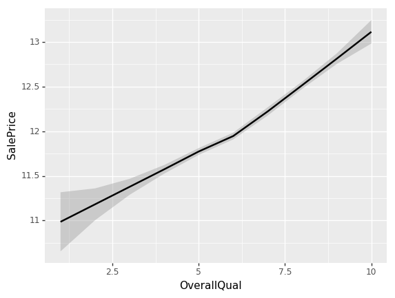
<ggplot: (-9223363268887317700)>
Looks like something occurs at an OverallQual of 6. The slope of the log of the sale price shifts to a higher value.
ggplot(x_all, aes('GrLivArea', 'SalePrice'))+stat_smooth(se=True, method='loess')
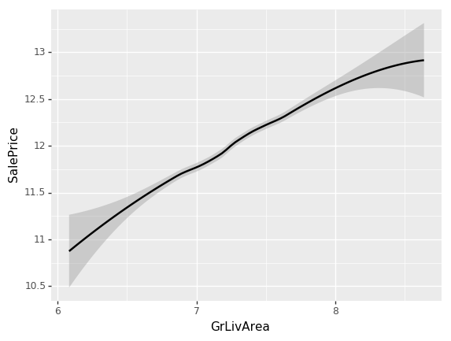
<ggplot: (8746504262043)>
ggplot(x_all, aes('YearBuilt', 'SalePrice'))+stat_smooth(se=True, method='loess')
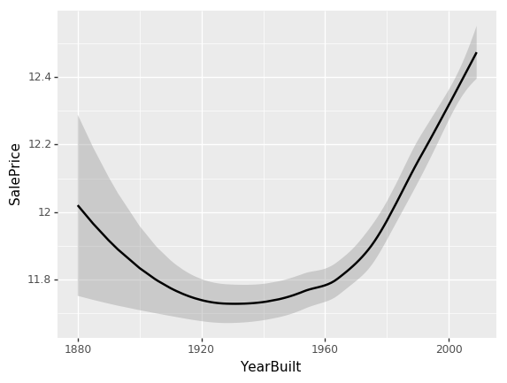
<ggplot: (8767967175088)>
While all our previous univariate relationships were basically straight lines, here we have some odd behavior. The problem is that when you look at a univariate relationship like this, there is a whole lot of collinearity going on — a whole lot of interactions that are being lost. For example, why did the price drop? Is it actually because things made between 1920 and 1960 are less valuable? Or is it actually because most of them were also sold during that time and there was maybe a recession then?
So what we really want to be able to do is say “well, what’s the relationship between SalePrice and YearBuilt all other things being equal. “All other things being equal” basically means if we sold something in 1990 vs. 1920 and it was exactly the same thing to exactly the same person in exactly the same auction so on and so forth, what would have been the difference in price? We can do this by using a partial dependence plot (pdp for short). What this analysis does is takes a random sample of 500 rows from the training data, assigns each row a new YearBuilt and uses our random forest model to predict what the new SalePrice's. We do this for the entire range of YearBuilt and we get the following plot:
from pdpbox import pdp
from plotnine import *
x = get_sample(df_keep2, 500)
def plot_pdp(feat, model_feat, clusters=None, feat_name=None):
feat_name = feat_name or feat
p = pdp.pdp_isolate(m2, x, model_feat,feat)
return pdp.pdp_plot(p, feat_name, plot_lines=True,
cluster=clusters is not None, n_cluster_centers=clusters)
model_feat = x.columns.values.tolist()
plot_pdp('YearBuilt',model_feat)
(<Figure size 1080x684 with 2 Axes>,
{'title_ax': <matplotlib.axes._subplots.AxesSubplot at 0x7f47446a77b8>,
'pdp_ax': <matplotlib.axes._subplots.AxesSubplot at 0x7f4746a282b0>})
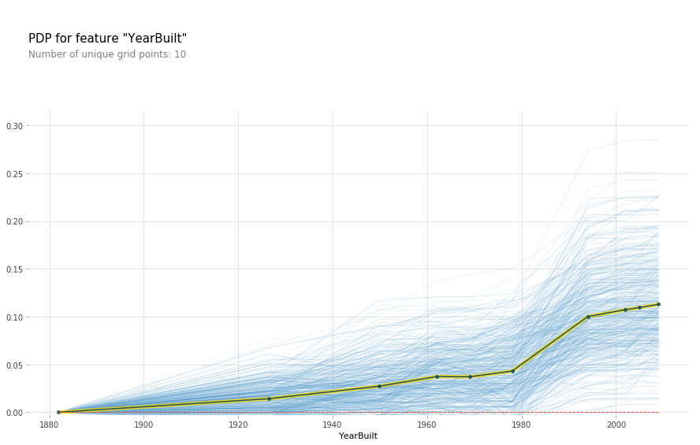
Each blue line represents a different batch of 500 random samples while the black line is the average of all the lines. While this isn't a completely straight line, it appears much more linear than the U shape we saw above. Hence it would appear that the high SalePrice isn't because of a specific feature of these old houses, perhaps these are historical houses that hold some special connotation that isn't represented in the data.
While we're at it, let's see if we can better understand that kink that was in the OverallQual curve.
plot_pdp('OverallQual',model_feat)
(<Figure size 1080x684 with 2 Axes>,
{'title_ax': <matplotlib.axes._subplots.AxesSubplot at 0x7f474ce7dfd0>,
'pdp_ax': <matplotlib.axes._subplots.AxesSubplot at 0x7f474c6336a0>})
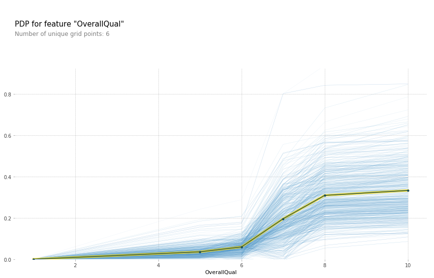
plot_pdp('OverallQual',model_feat,clusters = 5)
(<Figure size 1080x684 with 2 Axes>,
{'title_ax': <matplotlib.axes._subplots.AxesSubplot at 0x7f474c8ec6d8>,
'pdp_ax': <matplotlib.axes._subplots.AxesSubplot at 0x7f474c88a160>})
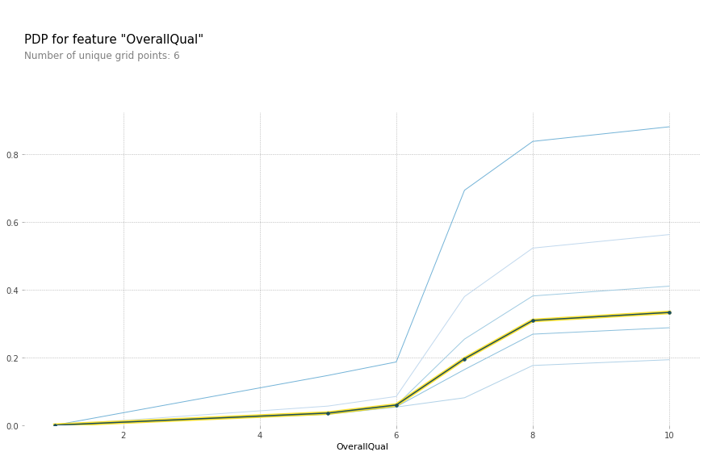
All other things being equal, there does indeed appear to be something special about an OverallQual of 6. Most likely this feature is simply a shorthand for a number of other features. Let keep exploring the data.
plot_pdp('GrLivArea',model_feat)
(<Figure size 1080x684 with 2 Axes>,
{'title_ax': <matplotlib.axes._subplots.AxesSubplot at 0x7f474c83f9e8>,
'pdp_ax': <matplotlib.axes._subplots.AxesSubplot at 0x7f474c7f1748>})
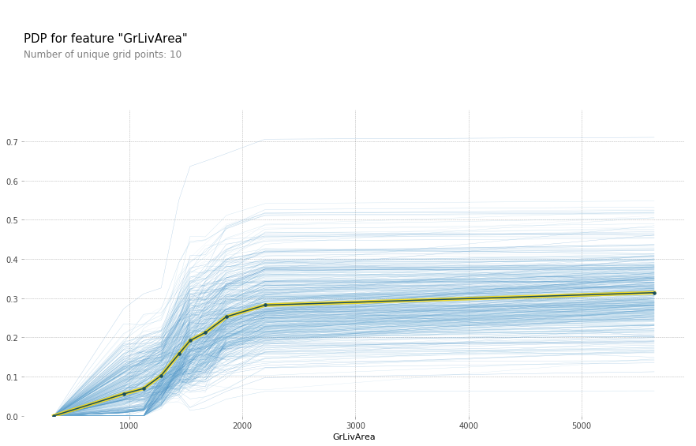
The above plot makes it seem like GrLivArea should definitely be in log. After rerunning the feature importance, GrLivArea jumped from ~0.15 to ~0.24! Definitely seems like a good move. Now lets see the new plot:
plot_pdp('GrLivArea',model_feat)
(<Figure size 1080x684 with 2 Axes>,
{'title_ax': <matplotlib.axes._subplots.AxesSubplot at 0x7f474473bba8>,
'pdp_ax': <matplotlib.axes._subplots.AxesSubplot at 0x7f4744707b00>})
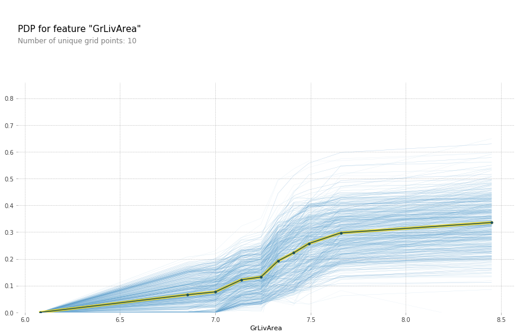
plot_pdp('TotalBsmtSF',model_feat)
(<Figure size 1080x684 with 2 Axes>,
{'title_ax': <matplotlib.axes._subplots.AxesSubplot at 0x7f474415ac88>,
'pdp_ax': <matplotlib.axes._subplots.AxesSubplot at 0x7f47441afc18>})
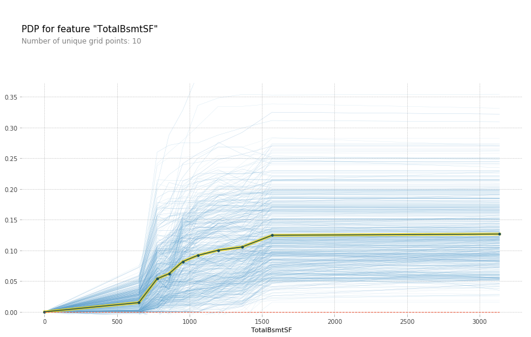
Another one that could benefit from taking the log of the variable. In fact it looks like a number of the SF and Area variables can benefit from it.
df_trn2, y_trn, nas = proc_df(df_raw, 'SalePrice', max_n_cat=7)
X_train, X_valid = split_vals(df_trn2, n_trn)
m = RandomForestRegressor(n_estimators=40, min_samples_leaf=1, max_features=0.6, n_jobs=-1, oob_score=True)
m.fit(X_train, y_train)
print_score(m)
Tree Interpreter